Información Litúrgica
- Significado de los colores litúrgicos 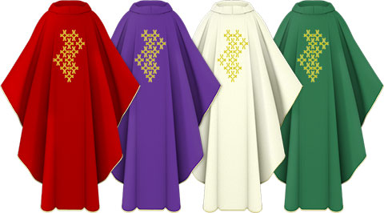
- Significado de los utensilios liturgicos
MENOS USADOS:
SOTANA
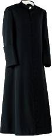
La palabra viene del latín subtana, o subtanea, de subtus, que significa debajo. Y se llama así a la vestidura talar (hasta los talones de los pies), que sin embargo no se lleva debajo, sino precisamente es lo que se ve. Es normalmente negra, pero en muchos casos es también blanca o roja o de otros colores, se ajusta al cuerpo, y con mangas estrechas.
La sotana fue instituida por la Iglesia a fines del siglo V con el propósito de darle a sus sacerdotes un modo de vestir serio, simple y austero. Recogiendo esta tradición, el Código de Derecho Canónico impone el hábito eclesiástico a todos los sacerdotes (canon 136).
PURIFICADOR
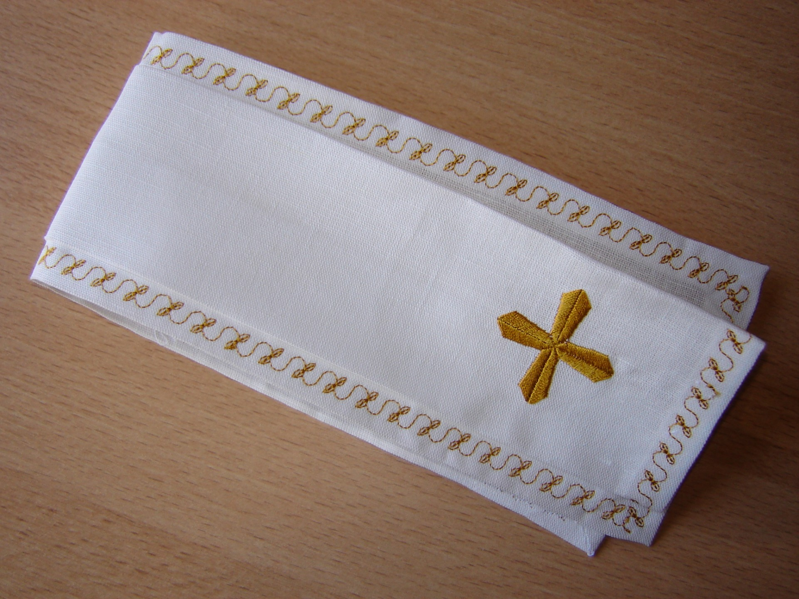Es un pequeño paño rectangular que usa el sacerdote en la Misa para limpiar el cáliz, la patena y sus dedos.
También sirve para limpiar la cruz cuando es besada.
Suele tener una cruz o símbolo litúrgico estampada en el centro.
Porta Viático o Porta Relicario
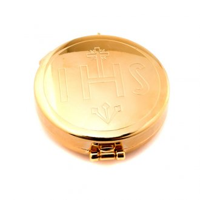
Es una especie de bolsita, de diversos materiales (tela, cuero, piel, plástico), que puede ir adornada con algún símbolo litúrgico. Lleva un cordón lago (para poder colgarse al cuello),y evitar que se caiga. Así el ministro trasporta el viatico o el relicario.
Pechera Sacerdotal
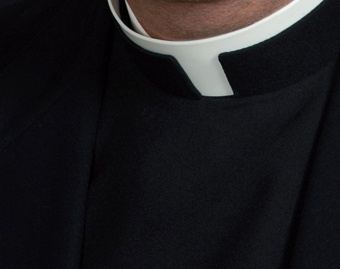
Es un pedazo de lienzo o paño con que se abriga el pecho, que se encuentra en la vestimenta típica de un sacerdote. Se usa para mantener en su lugar el cuello romano (cuando no usan sotana)
Palio
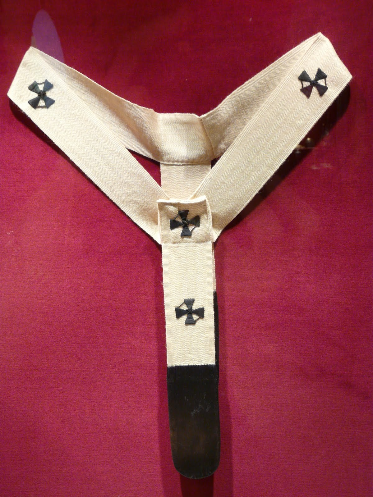
Insignia pontifical otorgada por el papa a los arzobispos y algunos obispos. Es una banda circular de lana blanca decorada con seis cruces negras que se coloca sobre los hombros, cayendo por delante y por atrás, confeccionado con la lana de dos corderos que anualmente son ofrecidos al papa en la fiesta de santa Inés.
Palia
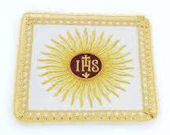
La palia o hijuela parece datar de finales del siglo XVI pues antes de dicha fecha ejercía dicha función un extremo de los corporales que se doblaba sobre el cáliz o bien otros corporales plegados, según diferentes costumbres regionales.
Es una pieza de tela cuadrada, de unos 12 cms. por lado, y reforzada generalmente con cartón en el interior. La Palia es usada para cubrir el cáliz durante la Misa y proteger su contenido del polvo, insectos, etc. (Si tiene forma redonda se la llama hijuela)
Manutergio

(Del latín manus, mano, y tergere, enjugar, secar)
Paño de lino blanco con que el celebrante principal se seca las manos cuando las lavaba. Esto se hace inmediatamente después de la preparación del cáliz.
Algunas veces, se utiliza una toalla blanca, no muy grande, y así se muestre el real sentido del lavabo.
EL SACERDOTE SE LAVA LAS MANOS ANTES DE LA CONSAGRACIÓN
Lo hace como gesto de purificación. El sacerdote se lava las manos para pedirle a Dios que lo purifique de sus pecados.
Mantel de Altar
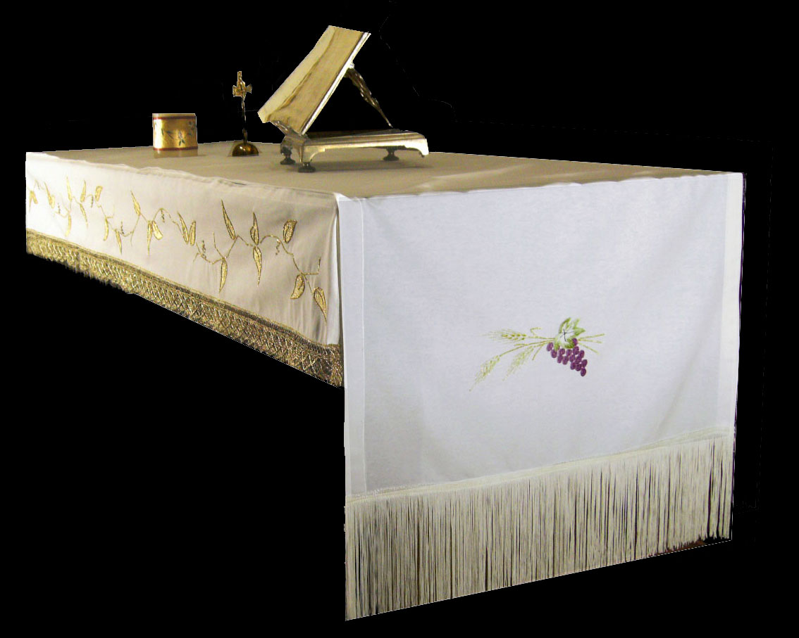
Se llama mantel en la liturgia, al lienzo que cubre el altar, en señal de respeto a la mesa en la que Cristo nos invita a comulgar: “por reverencia a la celebración del memorial del Señor y al banquete en que se distribuye el Cuerpo y Sangre del Señor, póngase sobre el altar por lo menos un mantel, que, en forma, medida y ornamentación, cuadre bien con la estructura del mismo altar”, lo cual vale también cuando se celebra en otro lugar en que no haya exactamente un altar, sino una mesa.
Humeral
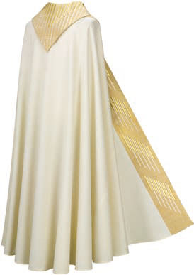
(Del latín ‘umerus’= el hueso que va entre el hombro y el codo).
Es el velo que se pone sobre los hombros; una especie de rebozo grande y decorado, que lleva el ministro que carga el Santísimo en una procesión. Suele ser un velo de unos 2 metros de largo por 50 cm de ancho, sujetado por delante con un broche, que cubre los hombros y con cuyas puntas se toma la custodia o el copón, con el clásico gesto de no tocar con las manos algo que se considera muy digno de reverencia como la Eucaristía.
Estola
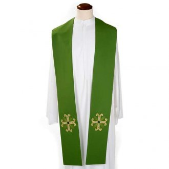
Del griego “stolé”, vestido.
Al comienzo se llamaba ‘orarium’ (también ‘mappa’ o ‘sudarium’); pero en Galia, hacia fines del s.VI, se la comenzó a llamar ‘estola’, término que en la época clásica designaba un manto amplio que usaban las matronas.
A partir del s.XII no se utilizó más el término ‘orarium’, sino estola.
Es una tela alrededor del cuello del sacerdote, usada para las celebraciones litúrgicas. La usan los obispos y presbíteros, colgando del cuello hacia delante; y los diáconos, desde un hombro hasta la cintura atravesando en diagonal la espalda y el pecho. Es símbolo de los poderes sagrados que recibe el sacerdote, como pastor que lleva a sus ovejas sobre sus hombros, como maestro que enseña a sus discípulos; como guía que conduce a las almas hacia la vida eterna.
Estandarte
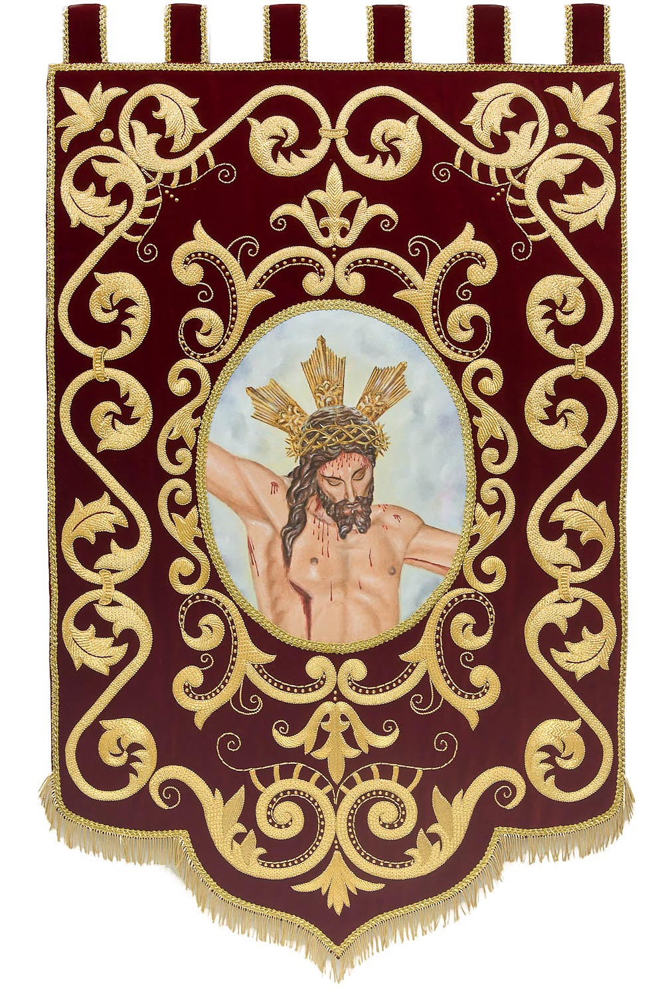
Del fr. ant. estandart, y este del franco *stand hard”, mantente firme.
Es una confección textil con colores y símbolos que representa a una nación o a un grupo de personas. Se le conoce con varios nombres: Bandera, Banner, o estandarte. (Cada bandera es un estandarte, pero un estandarte no es una bandera). Las Banderas y Estandartes cumplen la función de liderazgo.
Escapulario
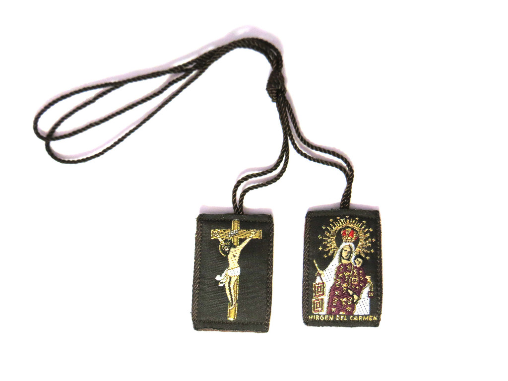
(en latín,scapula)
Literalmente es una prenda que se lleva sobre los hombros colgando por delante y por detrás. Es una tira de tela que los monjes y monjas llevan sobre el hábito y en la que se borda el escudo de la comunidad a la que se pertenecen. En la historia de su uso, se han llamado jugum Cristi (yugo de Cristo) o scutum (escudo), recordando varios pasajes de la Biblia.
El Cíngulo
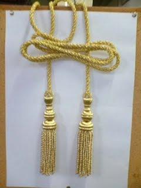
Es signo de la castidad, la cual debe de tal manera lucir en el sacerdote, que no admita, en absoluto, ninguna mancha ni en el cuerpo ni en el corazón.
En señal de lo cual mandó Dios, en otro tiempo, que los comensales del cordero se ciñeran los lomos, y el mismo Cristo dijo: “Sint lumbi vestri praecincti”, “estad con vuestras ropas ceñidas a la cintura”. Y también aparece en el Apocalipsis de San Juan ceñido por una orla dorada, para que comprendamos que nos hace falta purificarnos de todos los afectos, y vencer el amor carnal con el espiritual, que es el oro de la caridad.
Dalmatica
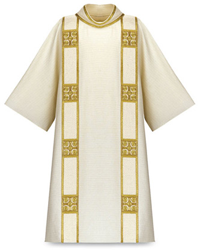
DALMATICA: (O TUNICELA). Del latín “dalmatica vestis”
Túnica o vestidura de Dalmacia (Grecia), Introducida en Roma por el emperador Cómodo, era una especie de túnica que se llevaba sobre la túnica talar, pero diferente de esta por ser más corta hasta las rodillas, es como una casulla con mangas, está cerrada delante, y está abierta por los costados hasta el hombro, con mangas amplias, que usan los diáconos sobre el alba y la estola.
Cubre Ambón
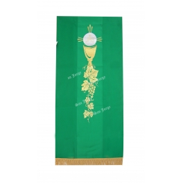
El ambón, al igual que el altar, usa un mantel, al que se le suele llamar antipendio o “cubre ambón”, por tener ese uso y es del color del tiempo litúrgico.
Ambón También se llama facistol. (de anabáinein = subir): béma. No confundirlo con el púlpito.
Cota
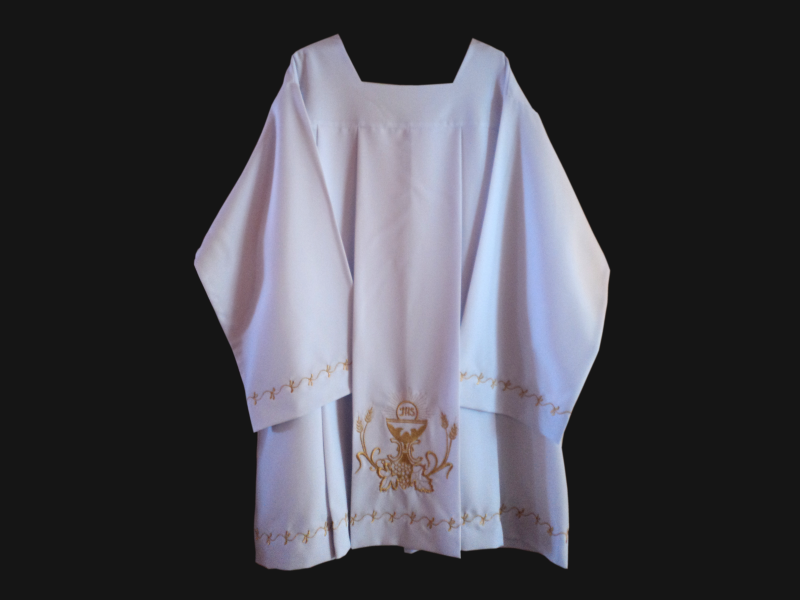
COTA (ó SOBREPELLIZ ó ROQUETE) Roquete: Del latín “Rochetum”
Especie de alba corta, hasta la altura de las rodillas, que se usa sobre la sotana o el hábito religioso, por Sacerdotes, seminaristas y Acólitos. También se llama sobrepelliz.
Puede ser usada por el sacerdote o el diácono para exponer el Santísimo, para la celebración de los sacramentos, para la predicación y las bendiciones. Lo visten también los acólitos siempre sobre el alba o la sotana.
Corporal
(del latín: corpus)
El nombre viene del Cuerpo del Señor, que va a reposar sobre este lienzo en la Eucaristía; así como en la adoración al Santísimo, si se hace sobre el altar. También se puede colocar sobre una mesita cuando se lleva la Comunión a los enfermos.
Es un paño sagrado cuadrado, de unos 40 o 50 cm. de lado. Debe ser suficientemente grande como para que se pueda depositar sobre él, el cáliz y el copón.
Conopeo

Del griego “konopeion”, que viene a ser como un velo o mosquitera.
Es el velo que a modo de tienda cubría el sagrario donde se reserva la Eucaristía. Se solía utilizar una tela de los colores litúrgicos propios del tiempo o la fiesta. También, en menor tamaño, se utilizaba para el copón o píxide, igualmente a modo de manto o tienda. Ahora el conopeo es facultativo.
Casulla
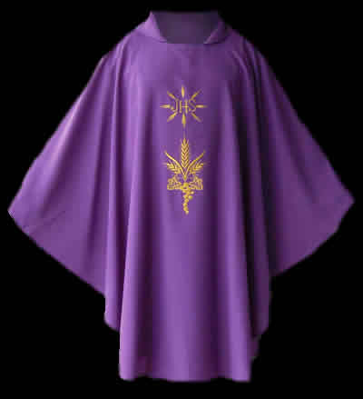
Del latín “casula” cabaña, pequeña casa o tienda.
Vestimenta exterior litúrgica, amplia y abierta por los costados, propio y distintivo del sacerdote. Se usa sobre el alba y la estola, únicamente para el Santo Sacrificio de la Misa.
Confeccionada en tela, tiene la forma de una capa, cerrada por delante con una abertura en el centro para imponerla en los hombros, tipo impermeable o poncho.
Capa Pluvial
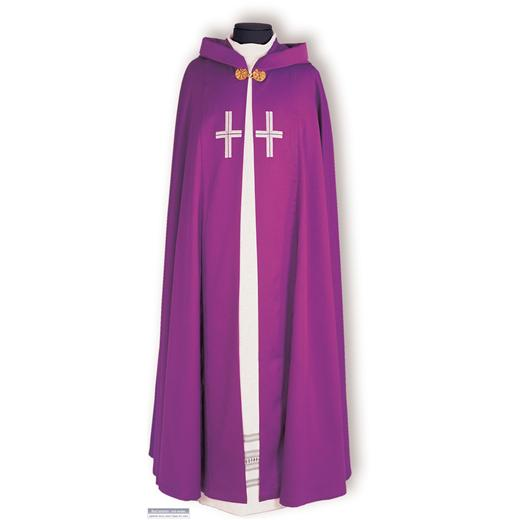
(del latín tardío “cappa”, de “capere”, coger, contener) (Del latín vulgar ‘plóvere’ = llover, porque originalmente fue empleada para protegerse de la lluvia en las procesiones).
Capa abierta por delante, cubre toda la espalda del sacerdote y llega hasta cerca del suelo, sujeta adelante por un broche. En todo momento a lo largo de la historia, suele adornarse con flecos y bordados.